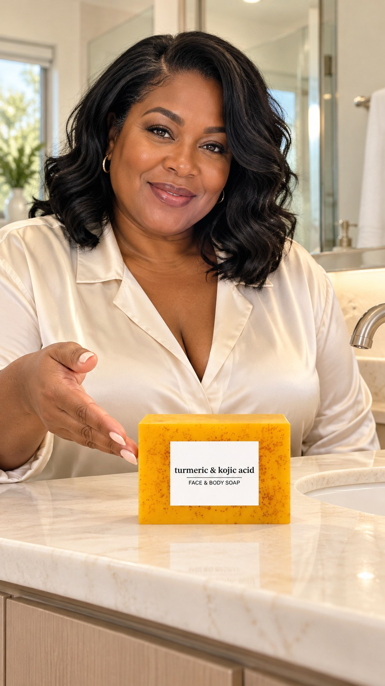

Your farms.
One front door.
Work in either farm, send a saved brief to the shared queue, and prepare the exact production package for Muse.
Turmeric Soap · The Detail Check
15 seconds · Vertical 9:16
UGC-style product introduction
TikTok Strategy
Your existing strategy farm, analytics connection, characters, and saved runs stay intact.
Shop Content
206 listings remain after the verified cleanup. Review products and develop Shop content here.
Muse Production
Use your existing TikTok Farm in Muse with a complete, editable production package.
The workflow
Create a brief → Send to command center → Review → Copy into Muse → Save the finished-video link
The farms share briefs only when you click Send to command center. They do not merge account analytics, access tokens, or private character images automatically.
One place for the next piece.
Each handoff is a saved copy. Later edits in the source farm require sending it again. Review status in this queue stays independent.
Current project
Import a handoff file
Import a GLAM handoff JSON file exported by either farm.
Give Muse the whole brief.
Copy or download the brief, then paste it into Muse or Claude.
A real production handoff
Your exact Muse farm is linked here. This app does not have a verified Muse API or permission to control its chat automatically.
Muse can receive browser-assisted submissions during an active assistant session. This website has no verified direct Muse submission API; opening its link does not send a job.
Created concept frame

AI-generated first-frame concept. Review product scale and label fidelity before animation.
Real product reference
Use the real product reference. Preserve packaging and do not invent personal results, acne cures, or dark-spot transformations.
Listing image is a product reference, not a rendered UGC video. Confirm the purchasable variant before the final product tag.
Connections you can trust.
TikTok Strategy
Uses its existing secure TikTok service. Authorization and refresh controls remain in the farm’s Connections screen.
Shop Content
Browser-reviewed showcase snapshot. No autonomous Shop API sync. Cleanup verified: 63 removed, 206 remaining.
Muse
Exact farm link and copy/download handoff. No API credential, automatic job submission, or automatic result retrieval.
Shared queue backup
The hub is public; saved briefs and results are local to this browser. The hub backup covers this queue only. Each farm retains its own backups, character references, and original data.
Restore replaces the hub queue after confirmation. It never replaces either farm.